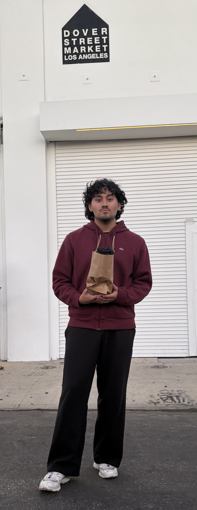
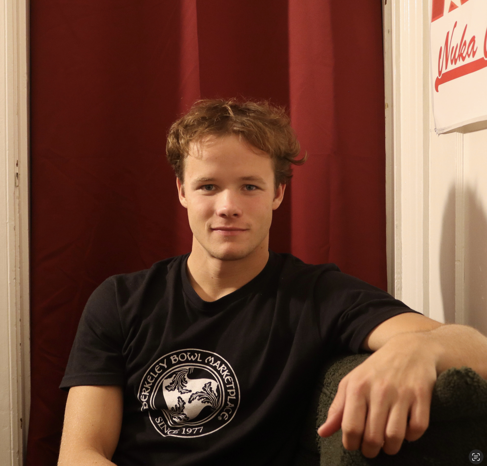
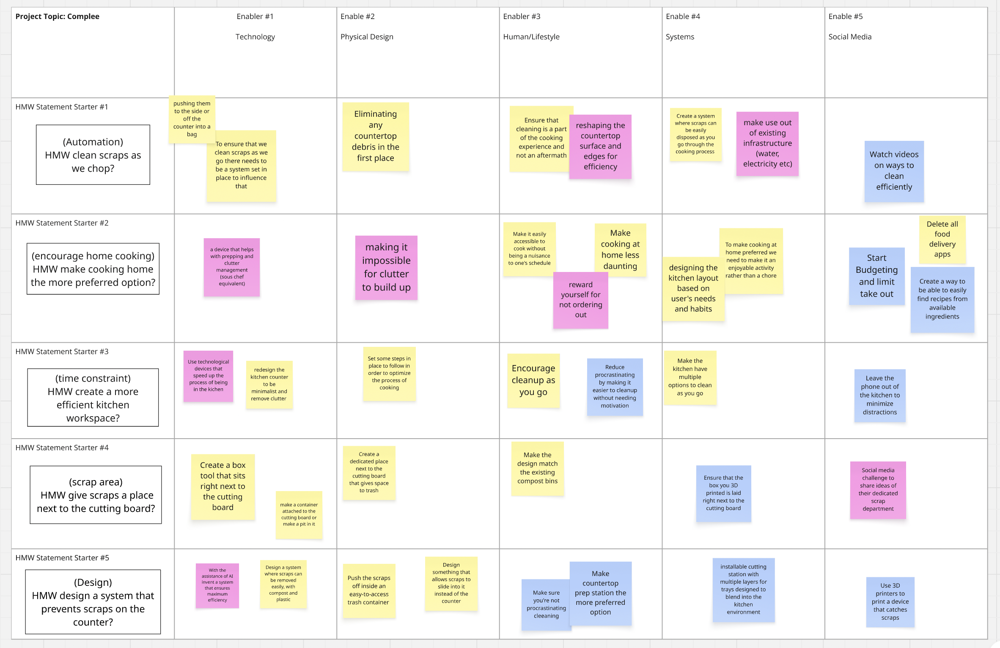
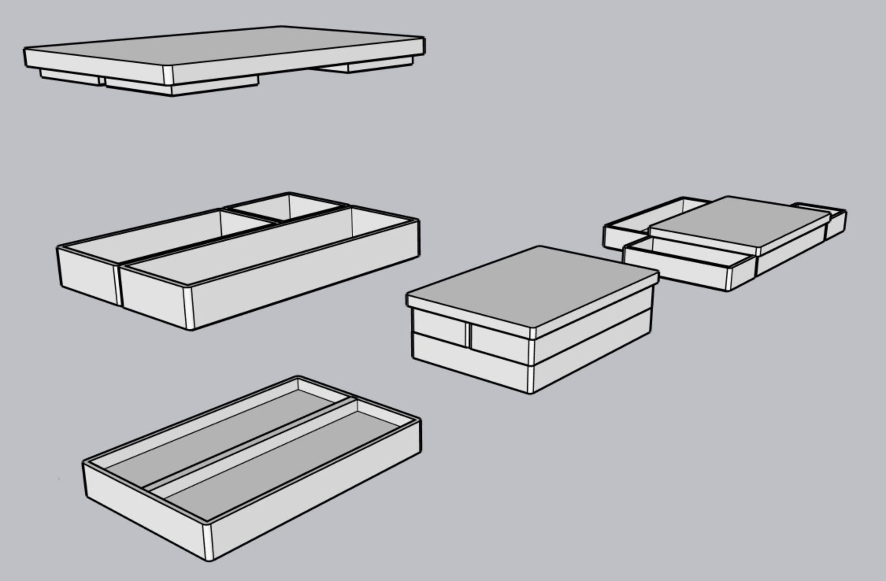
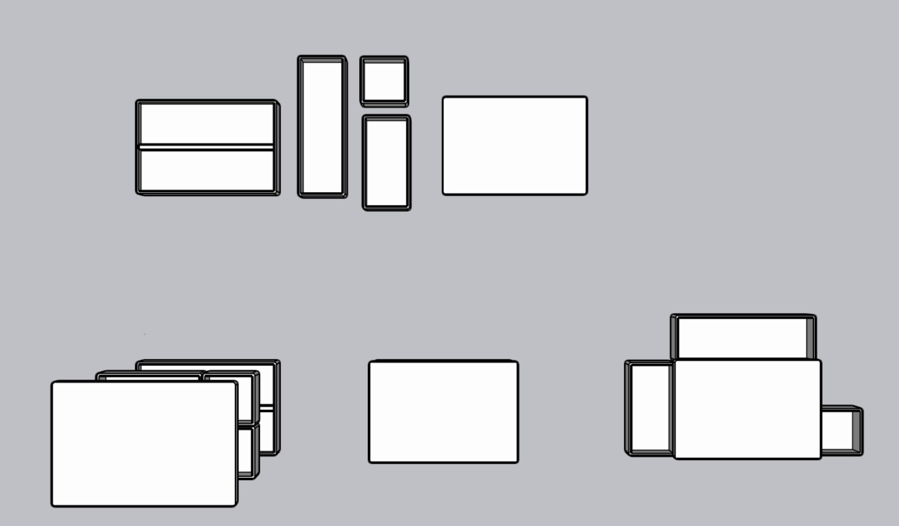
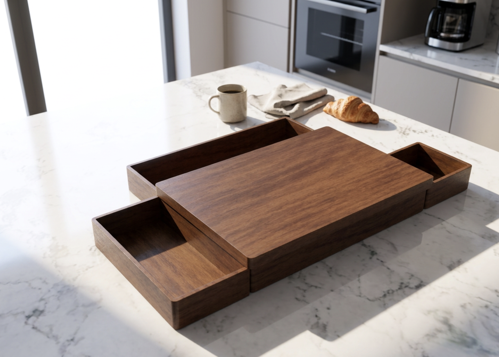
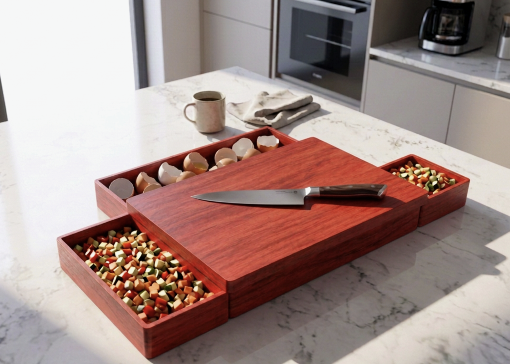
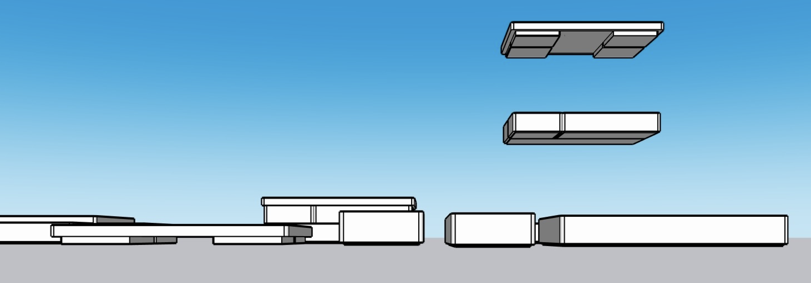
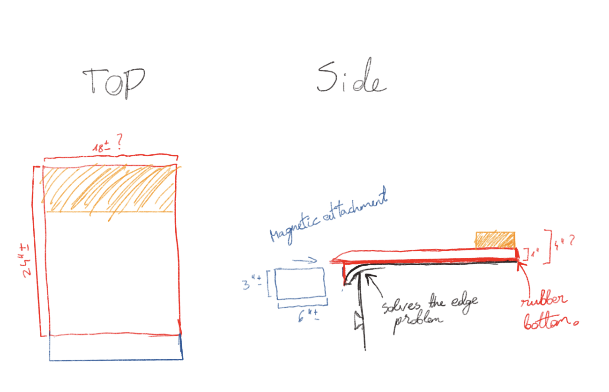
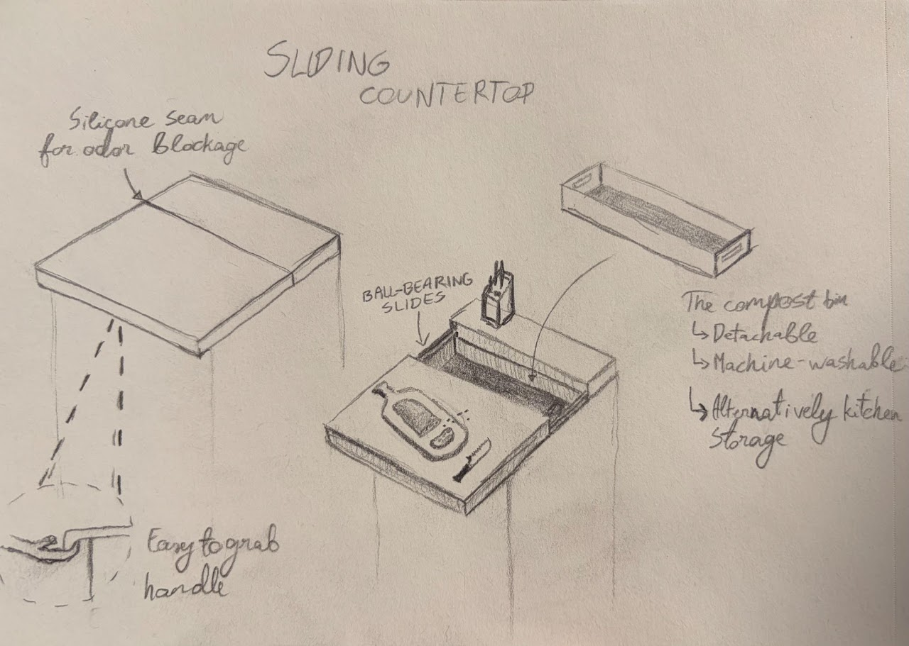

Project Topic
This project investigates how secondary kitchen burdens—specifically post-cooking clean-up and time constraints—discourage home meal preparation and drive consumers toward less nutritious dine-out options.
Team Members

Juan Rubio
Dylan Pearson
Tala Alshalfan

Lars Antoniak
James Phi
Refined Problem Description
In-Scope Boundaries
- Perceived post-meal clean-up workload and kitchen labor
- Post-cooking time scarcity during daily household routines
- Behavioral shifts from home-prepared meals to dining out
- Cost-versus-nutrition trade-offs in household meal planning
Out-of-Scope Boundaries
- Commercial restaurant dishwashing infrastructure
- Municipal solid waste collection and landfill logistics
- Supply chain economics of commercial dining options
- Gallup. Obesity Rate Declining in U.S. Available at: https://news.gallup.com/poll/696599/obesity-rate-declining.aspx
- Oleschuk BM, Choi HY, Ellison B, Pflugh Prescott M. Associations between cooking self-efficacy, attitude, and behaviors among people living alone: A cross-sectional survey analysis. Appetite. 2023 Oct 1;189:106999. doi: 10.1016/j.appet.2023.106999. Epub 2023 Aug 8. PMID: 37562756.
"How Might We...?"
User Persona
Olivia Wanderbilt
Background
- Wants to be in charge of what she eats
- Likes to experiment with new recipes
- Shares an apartment with her boyfriend
Motivations
- Loves a clean, tidy workspace when cooking
- Sanitized cooking environment
- Cooking as much at home as possible
Pain Points
- Hates when food debris ends up in seams and on the floor
- Lack of motivation for cleanup
- Unpleasant textures sticking to the countertop
Abstract Laddering

Figure: Complete HMW Abstract Laddering Tree
Support healthier lifestyles & reduce daily pressure
Give busy individuals free time after cooking and eliminate daily meal prep fatigue so eating at home remains cheap, healthy, and effortless.
Keep countertops clean and ready for use anytime
Prevent scrap accumulation and messy seams on surfaces by building immediate waste disposal directly into the workspace workflow.
Integrated counter-to-trash sliding mechanism
A dedicated scrap area next to the cutting board allowing zero-step sweep of food waste into a concealed, easily removable collection bin.
Final Creative Matrix

Figure: Workshop Brainstorm Matrix (Technology, Physical Design, Lifestyle, Systems & Social Media Enablers)
| Categories / Enablers | Mechanical / Spatial Integration | Material & Hygiene Seals | Behavioral Incentives |
|---|---|---|---|
| Pre-Meal Prep Phase | Sliding Countertop Track Smooth dual-direction slider exposing hidden prep bin. |
Silicone Seam Gasket Airtight seal preventing debris from falling into cabinet tracks. |
Zero-Step Sweep Push scraps straight off board into bin without picking up. |
| Post-Cooking Phase | Removable Storage Core Quick-release bin insert for effortless empty into compost. |
Antimicrobial Lining Dishwasher-safe polymer interior preventing bacteria buildup. |
Instant Closure Slide close counter to immediately hide mess while eating. |
Project Presentation File
Value Proposition Canvas

Figure: Complee Value Proposition Canvas & Feature Priority Ranking
Products, Pain Relievers & Gain Creators
Products & Services (Ranked by Importance)
- #1All-in-one cooking station elevated from the countertop
- #2Cutting board integrated prep deck
- #3Food containers & bins (plus scrap disposal container)
- #4Modular design for flexible kitchen layouts
- #5Knife holder built directly into the station
Pain Relievers (Top Ranked & Core)
- #1Less stress & #2Less clutter in the kitchen space
- #3Less crumbs/spills on the countertop via magnetic side waste trays
- Fast Clean-Up & Zero Odor: Dump trays straight into trash and wash the board
- No Weird Textures: Fully washable prep board eliminates sticky surface residue
- Zero Shared-Space Friction: Portable, easy-to-clean board you can take to your room
Gain Creators (Top Ranked & Core)
- #1Speed and efficiency through a clean, aesthetically pleasing workflow
- #2Organize prepped groceries easily in dedicated containers
- All-in-One Cook-Safe Tupperware: Microwaveable, oven-safe, and storage-ready
- Good Hygiene & Peace of Mind: Less clutter and a more pleasant cooking experience
Target Household Segment
Customer Jobs
- Cook nutritious, budget-conscious meals at home on weeknights
- Prep and organize multi-ingredient recipes without cluttering shared counters
- Maintain a sanitized kitchen in a shared apartment environment
Customer Pains
- Crumbs and food scraps falling into countertop seams and onto the floor
- Unpleasant, sticky textures remaining on countertop surfaces
- Post-cooking cleanup stress ("70% is easy, 100% is too hard daily")
- Shared apartment counter clutter and lingering food odors
Customer Gains
- Faster prep-to-plate speed with organized, ready-to-cook ingredients
- Clean, hygienic, aesthetically pleasing workspace with minimal scrubbing
- Peace of mind and free evening time to sustain healthy home cooking
Prototyping Process
Dimensional & Ergonomic Mockup
Validated elevated countertop footprint, knife slot ergonomics, and side tray reach angles using orthographic sketches and physical cardboard mockups.
Parametric 3D CAD & Renders
Modeled the elevated station, magnetic waste tray docking rails, integrated knife holder, and modular cook-safe container bays in 3D CAD.
Makerspace Fabrication
Laser-cut wood/acrylic structural decks paired with 3D-printed modular brackets, magnetic tray mounts, and removable waste/prep containers.
Usability & Washability Testing
Tested magnetic tray detachment speed, cutting stability on the elevated deck, and portability for sink washing in shared apartment kitchens.
3D CAD Renders & Initial Concept Sketches
Multi-angle hardware renders and early orthographic sketches exploring station elevation, magnetic side trays, modular containers, and knife storage.








Key Findings & Design Iterations
What Worked Well
- Magnetic side waste trays detach one-handed for instant trash dumping
- Elevated deck keeps prep ingredients organized directly beneath the board
- Portable board size fits standard apartment sinks for easy washing
Iterations Made
- Strengthened magnetic alignment guides so trays seat flush without gaps
- Standardized container bays to fit microwave/oven-safe prep Tupperware
- Added non-slip base pads to eliminate wobble during heavy chopping
Project Plan
Master Plan Scope
Covers all core deliverables, task breakdowns, milestones, and RACI assignments from Week 10 (Nov 2) through Week 14 Final Submissions (Nov 30 – Dec 4) under Project Manager Juan Rubio.
Weekly Web Page Updates (Mondays)
Led by Juan every Monday (Nov 9, 16, 23, 30) to publish updated sketches, slide decks, member responsibilities, VPC alignment, and prototype iterations.
Weekly Progress Reports (Mondays)
Tracked weekly against the baseline plan to document milestone completion, flag schedule deviations, execute risk mitigations, and log next steps.
Low-Fi & Test Plan
Rapid low-fi prototype built, concept test plan finalized, and Web Update #1 published.
User Testing & Competitor Study
User testing observations synthesized, competitor benchmark submitted, and Web Update #2 live.
Hi-Fi Core & Media Drafts
High-fidelity prototype core interactions built, video footage captured, and Web Update #3 posted.
Final Deliverables
Final prototype, 3-minute video, project poster, presentation deck, and final webpage submitted.
Deliverable Work Breakdown Structure (WBS)
1. Rapid & Low-Fi Prototype(s)
Completed- 1.1 Review Week 9 presentation feedback & low-fi specs.
- 1.2 Sketch interactive paper/wireframe layouts & user flows.
- 1.3 Construct physical cardboard/low-fi prototype mockup.
- 1.4 Run internal team walk-through for concept test readiness.
- 1.5 Present low-fi prototype in class for teaching team critique.
2. Concept Testing & Competitor Study
Active- 2.1 Finalize Concept Test Plan script & observer/facilitator roles.
- 2.2 Conduct user testing sessions with the rapid low-fi prototype.
- 2.3 Synthesize test observations, feedback & friction points.
- 2.4 Benchmark direct & indirect kitchen competitors and UX gaps.
- 2.5 Compile and submit the Week 11 Competitor Study report.
3. Final High-Fidelity Prototype
In Progress- 3.1 Translate user test insights into high-fidelity build specs.
- 3.2 Fabricate high-fidelity physical model & modular components.
- 3.3 Execute mid-fi/hi-fi refinement pass based on GSI feedback.
- 3.4 Complete final finish, assembly tolerances & edge-case testing.
4. 3-Minute Video Deliverable
Scheduled- 4.1 Write 3-minute script covering problem, testing & solution.
- 4.2 Build shot list & storyboards (hero shots & user tests).
- 4.3 Record voiceover narration and capture product/test footage.
- 4.4 Edit timeline in DaVinci Resolve / Premiere with titles.
- 4.5 Gather team review and render final 1080p video deliverable.
5. Project Poster
Scheduled- 5.1 Outline poster layout (Problem, Insights, Iteration, Impact).
- 5.2 Gather high-res CAD renders, diagrams & before/after sketches.
- 5.3 Draft concise poster copy and clean typographic hierarchy.
- 5.4 Design poster in Figma/Illustrator to showcase dimensions.
- 5.5 Proofread and export high-resolution print-ready PDF.
6. Final Project Presentation
Scheduled- 6.1 Structure final slide deck arc aligned with course rubric.
- 6.2 Design visual slides highlighting hi-fi prototype & video clips.
- 6.3 Draft speaker notes and divide speaking roles across team.
- 6.4 Rehearse presentation timing and Q&A responses together.
Project Gantt Timeline (Weeks 10–14)
| Work Package | Owner | W10 11/2–11/8 |
W11 11/9–11/15 |
W12 11/16–11/22 |
W13 11/23–11/29 |
W14 11/30–12/4 |
|---|---|---|---|---|---|---|
| Rapid & Low-Fi Prototype | Dylan | |||||
| Concept Testing & Test Plan | Lars & Team | |||||
| Competitor Study Report | Lars | |||||
| Final Prototype Build | Dylan & Team | |||||
| 3-Min Video Production | James | |||||
| Project Poster Design | Tala | |||||
| Final Presentation Deck | Lars & Team | |||||
| Weekly Web & Progress Reports | Juan |
Master Schedule & RACI Responsibility Matrix
| Work Package / Deliverable | Due Date | Lead | Support | Status |
|---|---|---|---|---|
| Rapid & Low-Fi Prototype + Review Report | Nov 9 (Demo Nov 10) | Dylan Pearson | James & Team | Completed |
| Web Page Update #1 & Progress Report #1 | Nov 9 | Juan Rubio | All Members | Completed |
| Competitor Study Report & Concept Test Synthesis | Nov 16 | Lars Antoniak | All Members | Due Today |
| Web Page Update #2 & Progress Report #2 | Nov 16 | Juan Rubio | All Members | Due Today |
| Final Prototype Core Build & Web Update #3 | Nov 23 | Dylan & Juan | All Members | Scheduled |
| Final Prototype, 3-Min Video, Poster & Deck | Nov 30 | Dylan, James, Tala & Lars | All Members | Scheduled |
| Web Page Update #4 & Final Progress Report | Nov 30 | Juan Rubio | All Members | Scheduled |